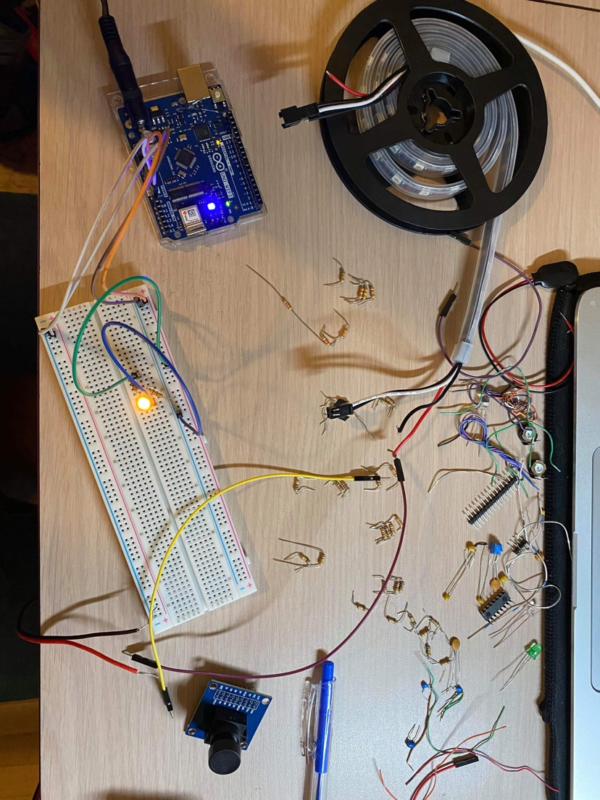
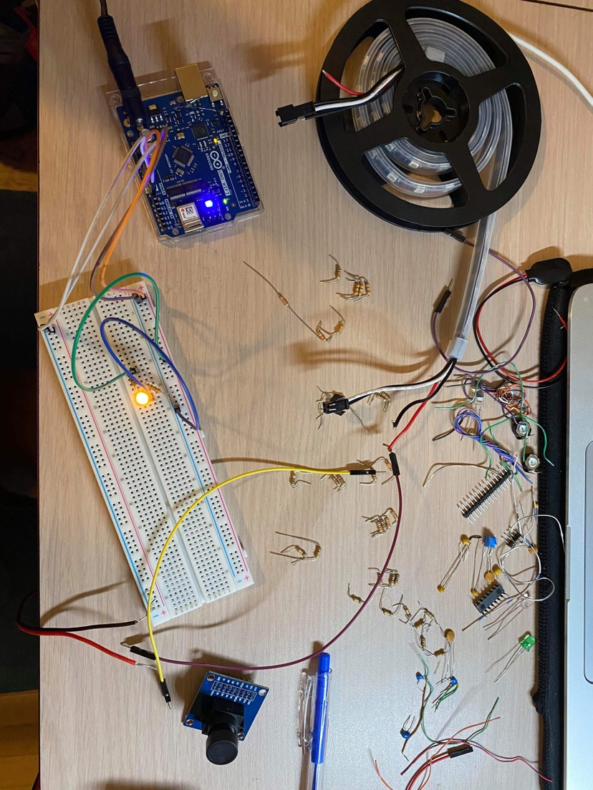

Final Updates: April 6 - April 13
Challenges
Housing/Mechanical Challenges
- We came across issues designing the lid. We tried cutting into the plastic but eventually decided on a tarp lid.
Software Challenges
- Async issues when fetching images. The app pulls images from Firebase storage in addition to Realtime database, so we must ensure that images are loaded in addition to Realtime database before we render components
- We forgot to bind certain functions. This caused rendering issues, so we had to convert them to ES6 arrow functions
- A ton of merge conflicts, especially with package-lock.json
- Issues with using both yarn and npm. It may have caused inconsistencies and conflicts
Electrical Challenges
- The ESP8266 module has its own microcontroller, and initially we used the arduino as a usb hub to upload data to the ESP8266, meaning we could not control the pins using the code from the ESP8266. We remedied this by using Serial communication between the two components, and sending certain codes corresponding to different actions and controlling the outputs of the arduino that way.
- The raspberry pi would not automatically run the python script for the cameras on startup, so we had to add a command to the rc.local file enabling that. However when we did that, we could not find certain modules because they were installed globally, so we had to add flags to run it as a User and also to include full file paths.
Progress
Housing/Mechanical
- Using a tarp material, hooks, and grommets to create a custom lid for the water tank to prevent dust and materials getting into the water
Software
- Implemented controls page to allow user to manually turn on lights, water pump, and take photos
- Touched up styles, making them more consistent along the app
- Allow users to click on calendar day to see which plants are being watered on that day and display photos (provided that the day is in the past, and the plant has already been planted)
- Pots page now shows photos taken of plants for the last seven days
- Fixed units for settings page. Pot diameter and length are specified as centimeters
Electrical
- Hooked up ESP8266 wifi module to connect to wifi and send and receive electrical data and communicate with the arduino board.
- Hooked up the lights to the power source to turn on the lights when prompted by app.
- Hooked up the pumps to the relays and send inputs to turn it on when prompted by app.
- Hooked up the water sensor to tell the app when the tank is empty
- Set up raspberry pi to take and upload images.
Photos

March 30 - April 5
Weekly Objectives
- Finish up integrating electrical parts to the housing
- Create a database through Firebase
- Thoroughly test each component of the Smart Garden
- Sand down sides, fill gaps, and paint the housing
- Make finishing touches like adding a door hatch and sliding mechanism for the housing
Challenges
Housing/Mechanical Challenges
- Time was limited in terms of putting additional features onto our project. We had to make abrupt trips to the tool shop as well as drive to San Jose again to utilize power tools. Also, the time needed for the glue, wood-filler, and paint was not fully considered. A lot of waiting time was needed. We could have prevented this if we planned and took into account before on how long these processes would take.
- Man-power was also limited which led to a lot of additional hours spent into sanding. Also, making all the rounded edges look even throughout was hard to visualize.
Software Challenges
- Learning JavaScript's asynchronous nature, as this caused inconsistencies in our app's function (especially when state is updated)
- Reading and writing data from Firebase and figuring out how to store it in state
- Migrating from React stateless components to class components
Electrical Challenges
- Water system: Purchased relay’s must-operate voltage is too high
- Light system: Inadequate Power supply
- Camera system: Board interface problems; RAM limitations
Progress
Housing/Mechanical
- Thursday (4/1): We needed to make changes to the housing part like adding a sliding mechanism and door hatch but did not have access to power tools to make the additions. However, we were eventually able to get access to the tools and drove to a church in San Jose to fix our housing componenet.
- Thursday (4/1): Utilized gorilla glue to combine the fencing pieces onto the shelves to designate 4 plant areas
- Thursday (4/1): Sanded edges to make it rounded and wood parts that were uneven to make it look flushed
- Thursday (4/1): Bought wood filler paste to cover up screws and unwanted gaps to
- Saturday (4/3): Sanded off the wood filler paste to flush it with the wood
- Saturday (4/3): Used the Carnauba Paste Wax to polish the wood
- Sunday (4/4): Painted our project initially with a dark red color for all components, gold for the edges, and white for the class greek letters, ΑΓ, while utilizing masking tape to outline the letters
Software
Completed React Native application and implemented the following:
- Tweaked the design of the app by making the home page our watering schedule to make it more intuitive for the user
- Timers for soil and water tank refill
- Notifications for water tank refill
- Watering frequency calculations: calendar is now marked with when the plants will be watered, based off plant type and plant age
- Volume of water per watering calculations: volume of water is calculated from diameter of pot, height of pot, and soil type
- Images fetched from Firebase to show the image of the plants from the last 7 days
Electrical
- Figured out a new plan for electrical parts
- Will be switching to a Raspberry pi and purchasing a boost module and external power supply in order to tackle our current electrical issues
Photos


March 23 - March 29
Weekly Objectives
- App development using React Native
- Set up server for Arduino
- Beginning construction of the electrical systems and finalizing connections between components.
Challenges
Housing/Mechanical Challenges
- Due to COVID-19, access to manufacturing processes were difficult at first, but luckily, we were able to borrow some tools from someone we know. We had to drive all the way to San Jose to utilize these tools.
- Human error was definitely a challenge to overcome as many measurements were off by little increments and the usage of tools were not exactly perfect such as using the saws to cut in a straight line despite making marks of where to cut. To solve this we improvised our initial design by tweaking the initial measurements we made through our CAD design.
- When we were drilling/screwing components together, factors that we didn’t initially consider was the length of the nail vs. the thickness of the components. However, this was resolved by using smaller wood pieces to make the penetration depth thicker so the nail wouldn’t stick out and possibly crack the wood.
- Looking at the product as a whole was also difficult initially because we made each housing component first. When we had to assemble everything together into one product, it was difficult. A lot of undoing the screws and going back and forth happened in order to get the product as a complete whole. This could have been prevented if we planned out beforehand how everything would combine together with the screws.
Software & Server Challenges
- Getting everyone to learning how to contribute with Git was a big challenge. It was confusing at first to understand forks, cloning, and branches. With online resources, we were able to catch everyone up to speed.
- We had difficulty with initializing the React Native app. We did not know how to start the app until we used expo.
- Not everyone had NPM, Xcode, or expo installed, so we had to configure everyone's machine to ensure the app could run
- Dealing with merge conflicts was another issue, as at the beginning the codebase would change rapidly
- Not many of the pledge brothers are familiar with C, and less so with sockets, so we had to spend some time to research and make sure that the sockets functioned as we intended.
Progress
Housing/Mechanical
- Saturday (3/27): drilled holes and utilized screws again this time to combine each housing component to one whole product, added the back panel to enclose the open spaces in the rear view, made a drawer mechanism for the electrical housing for easier access, used a hacksaw to cut little wood piece resembling fencing on the shelves to designate an area for each pot/plant
Software & Server
- Have barebones React Native app working
- Have Git organization set up where everyone learned how to contribute with the fork -> clone -> commit -> pull request workflow
- Used React Navigation to route the home page, pots page, calendar page, and settings page
- Installed Calendar npm package to set up the calendar page
- Created version 2 of mockups which ironed out details in the settings page, such as asking users for plant type, soil type, and pot dimensions
- We have a basic server that can listen for and service connection requests. We also created a struct to store the plant settings for each particular plant, and implemented logic for updating settings based on the data sent from the app.
Electrical
- The electrical team received the majority of their components and begun assembly. There is one power source for the Arduino that delivers 12 V, which the Arduino board then regulates down to 5 V and 3.3 V. Used in conjunction with a breadboard, the pumps, lights, and cameras can all be powered and connected.
Next Steps
- Glue fencing pieces together, sand parts of the wood, cover up screws and unwanted gaps with wood filler paste, utilize Carnauba Paste Wax, paint housing with Theta Tau colors
- Set up Arduino server and API
- Set up React Native app to fetch and send data from API and store data in state
- Code a timer that will write to the Arduino based on the settings of the plant to perform specific actions such as turning lights on and off, turning the pump on, and retrieving and storing pictures taken by the cameras.
- For electrical, we will assemble and secure the electrical system into the wooden frame.
Photos

 



March 16 - March 22
Weekly Objectives
- Construct the physical frame
- Set up app development
Progress
Housing/Mechanical
- Monday (3/22): made measurements on the wood for each respective housing component, cut each wood using a circular power saw, drilled holes and utilized screws to combine the base and sides of each housing (shelves, water tank, electrical), finished the basic layout of our physical product (every housing component is still separate)
March 9 - March 15
Progress
- Ordered materials
- Perform background botany research on different plant types to define customization guidelines
- Complete a finalized development plan for the mechanical and software components of the project